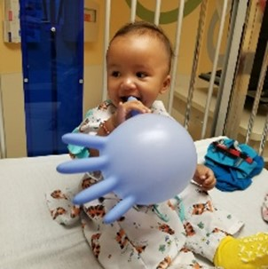

World Pediatric Project: Heal a Child, Change the World
For three years, I have worked at World Pediatric Project (WPP), a registered non-profit in St. Louis that helps children from Central America and the Eastern Caribbean access urgently needed surgical care. Here are a couple of children who have inspired me.*
Iker
Not even two years old, little Iker from Honduras travelled to St. Louis, Missouri to receive surgery for a congenital heart defect. His only complaint after surgery: his feet hurt from running around so much … the first time in his life he had the energy to be so active!
Kevon

Kevon just completed his 17th birthday in St. Louis, Missouri where he has been for almost the last year. He comes to us from Barbados with a very rare congenital orthopedic condition that inhibited his ability to walk and eventually would have left him permanently disabled. Though his treatment has been long and at times very difficult, he has exhibited extraordinary strength and resilience.